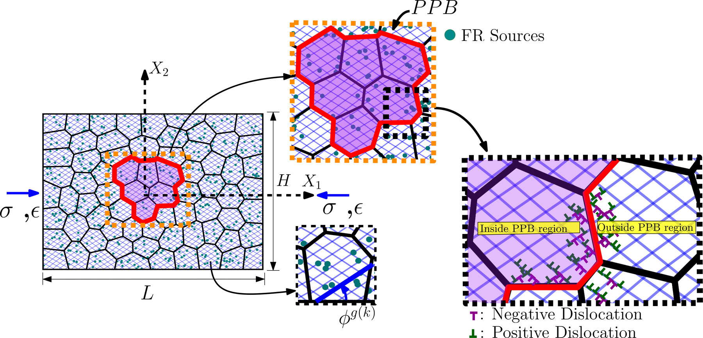
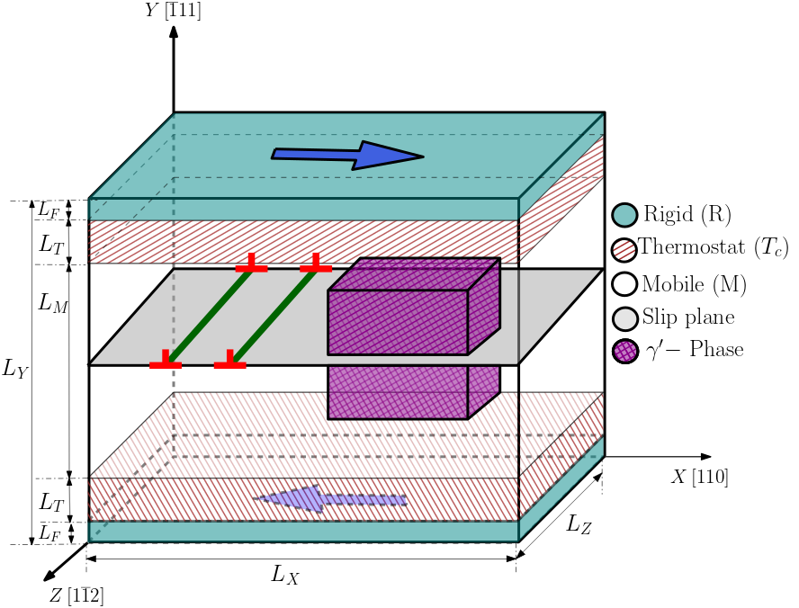
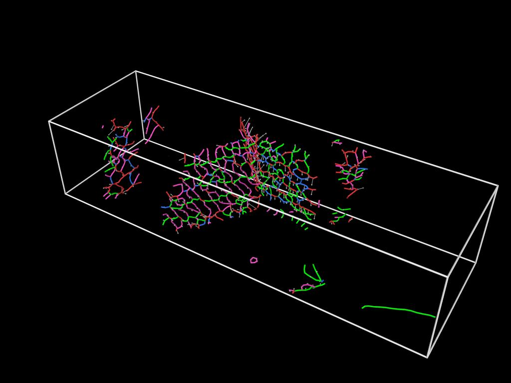
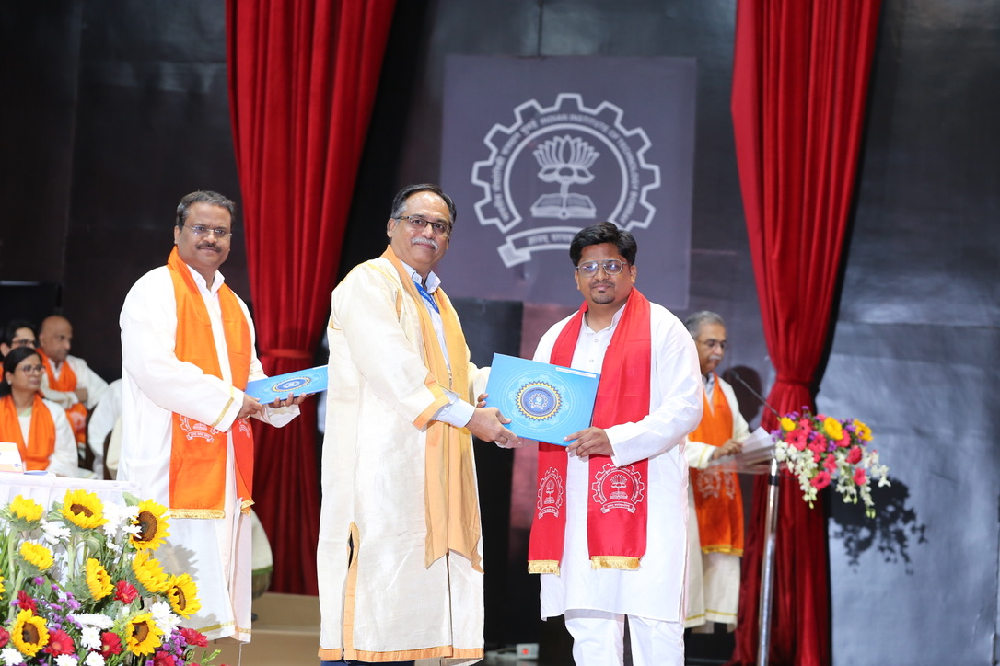
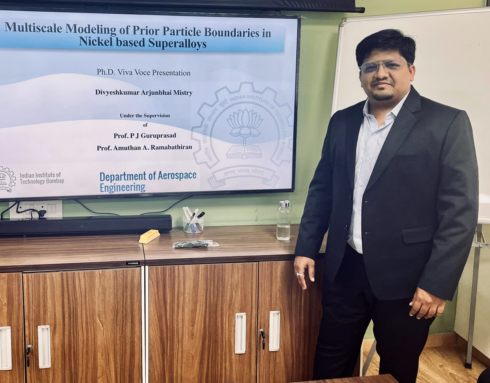

Molecular dynamics
LAMMPS simulation of defect mobility, precipitate strengthening, crack-tip deformation, and temperature-dependent fracture.
Computational materials scientist
I investigate how dislocations, interfaces, and crack-tip processes govern deformation and fracture in advanced structural materials, using molecular dynamics, discrete dislocation dynamics, and high-performance computing.

Research profile
I develop physics-based computational approaches that connect defect-scale mechanisms with the measurable response of structural materials.
I use computational modeling to understand how structural materials deform, strengthen, and fracture. My work spans tungsten and nickel-based superalloys, with a particular focus on the defects and interfaces that govern their mechanical response.
I earned my Ph.D. in Aerospace Engineering from IIT Bombay. As a Visiting Researcher at Merrimack College, I investigated temperature-dependent fracture in tungsten and tungsten-rhenium alloys, connecting atomistic crack-tip processes with dislocation behavior at larger scales.
Core expertise
LAMMPS simulation of defect mobility, precipitate strengthening, crack-tip deformation, and temperature-dependent fracture.
Three-dimensional DDD of Frank-Read sources, interfaces, network evolution, and microstructure-sensitive hardening.
Reproducible high-throughput simulation and analysis pipelines using Python, C/C++, Fortran, and Linux systems.
Mechanism-focused analysis with OVITO, DXA, ParaView, Neper, NumPy, Pandas, and custom post-processing tools.
Research experience
Department of Mechanical and Electrical Engineering, Merrimack College
North Andover, MA, USA
Department of Aerospace Engineering, IIT Bombay
Department of Aerospace Engineering, IIT Bombay
Featured research
Each project addresses a distinct physical mechanism and uses the simulation scale appropriate to that question.

Polycrystalline DDD reveals how PPB clusters promote dislocation pile-ups, back stresses, hardening, and retained residual stress.
Explore the studyA modular framework for grain-resolved BCC source initialization, network evolution, quantitative analysis, and reproducible visualization.
View workflow and code
Molecular dynamics identifies two power-law regimes in critical resolved shear stress and relates the transition to a dislocation-core length scale.
Read the article
Temperature-dependent atomistic fracture is interpreted alongside representative collective dislocation evolution while preserving the distinct scope of each model.
Publication detailsResearch in motion
The simulation provides a direct view of evolving crack-tip deformation during tensile loading. It supports mechanism-level analysis of temperature-sensitive stress relaxation and fracture response.
Related journal manuscript in preparationSelected outputs
Divyesh A. Mistry, Tawqeer Nasir Tak, R. Sankarasubramanian, and P. J. Guruprasad. Journal of Engineering Materials and Technology.
Divyesh A. Mistry and Amuthan A. Ramabathiran. Computational Materials Science 259, 114122.
Divyesh A. Mistry and Avik Mahata. Upcoming journal manuscript.
Open-source modular Python workflow with a reproducible polycrystalline example, tests, and documentation.


Doctoral milestone
Multiscale Modeling of Prior Particle Boundaries in Nickel-based Superalloys
The doctoral research developed a hierarchical computational framework connecting atomistic defect properties with mesoscale dislocation dynamics to examine precipitate strengthening, interface-controlled slip, and prior-particle-boundary effects.
Earlier education
Recognition
Professional milestone | June 2026
Speaker recognition for the presentation “Multiscale Modeling of Dislocation-Precipitate-PPB Interactions in Powder-Metallurgy Nickel Superalloys,” presented at EMI 2026 in Boulder, Colorado.


Professional contact
Open to research-intensive roles and collaborations in computational materials science, mechanics, scientific software, and high-performance simulation.